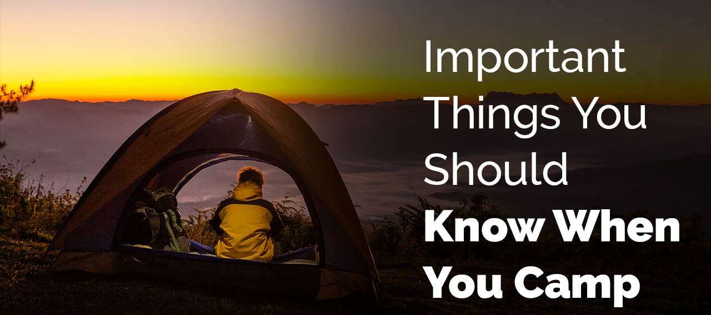

Importance of Camping & being with nature
Camping has many benifits whether you are 8, 18 or 80. After coming from a camping trip you will always feel the difference in you.
Below mentioned are some of the main benifits of Camping:
- Stress reduction: Being with nature will heal you. It helps reduce anger, fear and stress. Nature can generate a multitude of
positive emotions, such as calmness, joy, creativity and can facilitate concentration.
- Relationship building: Camping helps you spend more time with your family and friends without any distractions from the outside busy world.
It helps to build strong relationships.
- Physical fitness: Exposure to nature not only makes you feel better emotionally,
it contributes to your physical wellbeing, reducing blood pressure, heart rate, muscle tension, and the production of stress hormones.
- Development of new skills: Camping will help you to build a new skill every now and then. These skills are important to have, and yet
we don’t often get a chance to develop them during the course of our regular busy schedules.
How to make a good Camping Site

Preparing a good camping site is the key to enjoy the time you spend. Listed below are the seven main tips for preparing a good camping site:
- Finding the Ideal Campsite - Find a spot that is close enough to a water resource and make sure that it is an area with no wild animals.
- Set Up Your Tent - The land to set up a camp should be
generally flat and the tent should have a waterproof tarp or cloth down on the ground before you get to work fitting the polls together
and stretching the canvas. Finally make sure prevent it from blowing away by setting it up properly.You can tie the tent down to nearby trees if it is too windy.
- Food Storage - Keep non-perishable foods out of the cooler and in a canvas, paper or plastic bag, or if necessary a bear-proof container. Make sure to take enough food and water.
- Fire and Cooking Area - Tip here is to make your own fire starters ahead of time by coating some cotton balls in petroleum jelly, store them in a small container for easy use.
- Get Your Camping Equipments ready - make sure you have your tent, sleeping bag or a sleeping mat, camping lanterns or tourch, first aid kit and folding chairs.
- Clothing and other personal items - make sure you bring proper cloths with you as the climate could change during the time of your stay and make sure to wear good hiking boots to avoid sprains and strains.
- Add some extras - The following can make your trip a complete experience:
- a camera
- a set of binoculars
- maps , books or field guides
Why should you camp in Sri Lanka?
- Soak yourself in a continuous cycle of eating, sleeping, bathing and walking around; all within the campsite itself.
- Exclusive access to national park hotspots at times when animals are their own selves and day visitors are not around.
- Relax and be a part of the complete natural and wild experience.
- Go in search of wild animals at your own convenience.
- Camping does not have to be restricted to National Parks and a jungle surrounding. In Sri Lanka, there are interesting camping sites on the beach, amidst mountainous surroundings and amidst villages as well.
Things to keep in mind

- Campers must strictly abide by specific rules of the national park
- Do not litter on the campsite or any part of the park.
- Break trash down and take it home with you if there’s no on-site garbage
- Be prepared for medical & health issues
- Any harm caused to nature is a serious crime and will be dealt with extreme prejudice.
- Always be respectful of the animals and the surroundings, don not invade these creatures’ space.